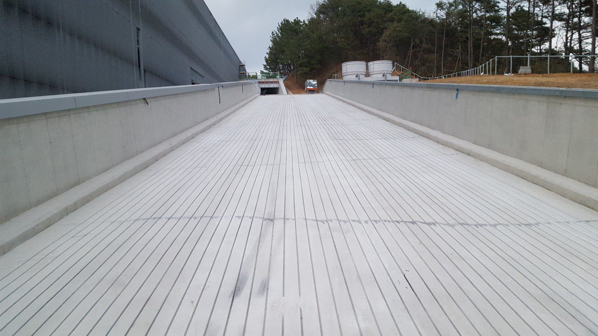

열선 홈파기란?
열선 홈파기는 겨울철 결빙을 막는 열선(스노우멜팅·로드히팅 케이블)을 노면에 묻을 수 있도록, 열선이 들어갈 홈을 포장면에 커팅하는 공사입니다. 열선 커팅, 열선 매립 홈 커팅이라고도 부릅니다.
태양천 그루빙은 노면 그루빙 전용 장비와 좁은 구간용 소형 장비로 콘크리트 경사로·주차장 램프·진입로에 열선 홈을 냅니다. 기존 포장을 걷어내지 않고 홈만 내므로 이미 사용 중인 램프에도 열선을 설치할 수 있습니다.
- 열선 설계 도면의 배치·간격에 맞춰 홈의 폭과 깊이를 정해 커팅합니다.
- 철근·배관 등 매설물 위치를 먼저 확인하고 절삭 깊이를 조정합니다.
- 안개형 분무 집진으로 분진을 줄여 지하주차장 같은 밀폐 공간에서도 작업합니다.
- 서울·경기부터 지방 현장까지 전국 시공합니다.

열선이 설치된 콘크리트 경사로
열선 홈파기 시공 대상
- 지하주차장 진입 램프아파트·오피스·상가 건물의 경사 램프. 눈이 들어오고 얼기 쉬운 출입구 구간에 열선을 묻습니다.
- 건물 진입로·경사로지식산업센터·물류센터·공장의 차량 진입로, 주택·빌라의 경사 진입로.
- 급경사 골목·사유 도로겨울철 차량이 오르지 못하거나 미끄러지는 급경사 구간.
이미 열선이 묻힌 램프에 미끄럼 방지 횡방향 그루빙을 할 때도 열선 깊이를 먼저 확인해 열선이 손상되지 않게 절삭합니다. (주차장 램프 그루빙 사례)
시공 범위와 역할 분담
태양천은 열선이 들어갈 홈 커팅을 맡습니다. 열선 포설과 전기 연결은 전기공사업체가 시공합니다.
| 공정 | 시공 |
|---|---|
| 현장 확인, 홈 위치 표시, 홈 커팅, 커팅 후 청소 | 태양천 그루빙 |
| 열선 포설·결선, 전원·온도 제어 장치 설치 | 전기공사업체 |
| 홈 충진(실링)·마감 | 열선 시방에 따라 현장에서 협의 |
열선 업체나 건물 관리 측에서 받은 열선 도면(배치·간격·총 길이)이 있으면 그대로 따라 커팅합니다. 도면이 아직 없으면 현장 사진과 면적을 먼저 보내 주세요.
열선 홈파기 시공 절차
- 문의현장 위치, 노면 사진, 면적, 열선 도면(있으면)을 보내 주세요.
- 현장 확인·견적포장 종류와 두께, 매설물, 작업 가능 시간을 확인하고 홈 길이 기준으로 견적을 드립니다.
- 홈 커팅도면대로 위치를 표시한 뒤 커팅합니다. 차량 출입이 적은 시간에 맞추고 분무 집진으로 분진을 줄입니다.
- 청소·인계홈 안의 절삭 잔재를 청소하고 열선 시공 업체에 넘깁니다.
작업 시간은 홈의 총 길이, 노면 상태, 출입 통제 조건에 따라 달라지므로 현장 확인 후 견적서에 함께 안내합니다.
열선 홈파기 자주 묻는 질문
네. 기존 콘크리트 포장을 걷어내지 않고 열선이 들어갈 홈만 커팅하므로 사용 중인 램프·진입로에도 열선을 설치할 수 있습니다. 차량 출입이 적은 시간에 맞춰 작업합니다.
사용할 열선의 규격과 열선 업체의 도면·시방에 맞춥니다. 철근·배관 등 매설물 위치와 포장 두께를 먼저 확인한 뒤 절삭 깊이를 정합니다.
아니요. 태양천은 홈 커팅을 시공하고, 열선 포설·결선·전원 연결은 전기공사업체가 시공합니다. 열선 업체가 정해져 있으면 그 업체의 도면에 맞춰 일정을 맞춥니다.
안개형 분무 집진으로 절삭 분진을 억제합니다. 지하주차장처럼 밀폐된 공간에서도 분무 집진으로 입주민 불편을 줄여 그루빙을 시공해 왔습니다.
홈의 총 길이, 포장 종류와 상태, 작업 시간 제한 등 현장 조건에 따라 달라집니다. 현장 사진과 면적(가능하면 열선 도면)을 보내 주시면 현장을 확인한 뒤 무료로 견적을 드립니다. 열선 홈파기 견적 문의 →